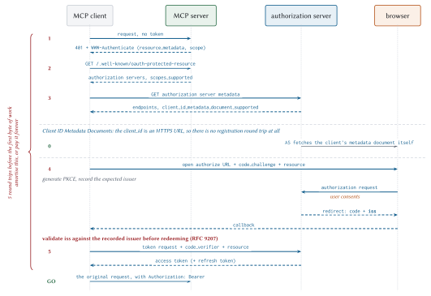

Authorization on the Wire
This is a security chapter with a performance chapter hiding inside it, which is the structure High Performance Browser Networking used for TLS and for the same reason. Authorization is not a policy you configure once and stop thinking about. It is a sequence of network round trips, all of which happen before your application does any useful work, and each of which the user experiences as your application being slow to start.
Done properly you pay that sequence once and cache the result for hours. Done carelessly you pay it on every request forever, and because each individual round trip looks cheap in isolation, nobody notices until the total is the largest single item in your latency budget.
The shape of it
MCP does not invent an auth scheme. It profiles OAuth 2.1 and a stack of RFCs around it, taking a deliberately small subset. The roles map cleanly:
- The MCP server is an OAuth resource server.
-
It accepts access tokens and validates them. It does not issue them.
- The MCP client is an OAuth client.
-
It obtains tokens on behalf of a user.
- The authorization server is somebody else’s problem.
-
Entra ID, Okta, Keycloak, or your own. MCP specifies how a client finds it and says nothing about its internals.
Two scoping rules before we go further.
Authorization is optional. Plenty of MCP servers need none.
Authorization is for HTTP. On stdio the specification says explicitly that you should not do this, and should take credentials from the environment instead. The client launched the process; it can hand it an API key through the environment block. Running an OAuth flow against your own subprocess is theatre.
{
"mcpServers": {
"meridian-risk": {
"command": "python3",
"args": ["-m", "meridian.serve", "risk"],
"env": { "MERIDIAN_API_KEY": "..." }
}
}
}The full flow, and its price tag

Walking it:
1. The challenge. The client makes an unauthenticated request. The server answers 401 with a WWW-Authenticate header that points at its metadata and, ideally, names the scopes needed:
HTTP/1.1 401 Unauthorized
WWW-Authenticate: Bearer resource_metadata="https://mcp.meridian.example/.well-known/oauth-protected-resource",
scope="risk:read"That scope parameter is a courtesy with real value. Without it the client falls back to requesting everything in scopes_supported, which means the user sees a consent screen asking for more than the operation needs, which means the user learns to click through consent screens.
2. Protected resource metadata. Required, by RFC 9728. The client fetches it and learns which authorization servers this resource trusts.
3. Authorization server metadata. The client tries OAuth 2.0 Authorization Server Metadata and OpenID Connect Discovery in priority order. Clients must support both, because the ecosystem is split and will stay split.
4. Authorization. The client opens a browser at the authorization server’s authorization endpoint. The user signs in, sees a consent screen, and approves. The browser is then redirected to a URI the client is listening on, carrying an authorization code. Two parameters on that request are mandatory, and both are worth understanding rather than copying.
The first is code_challenge.
5. Token exchange. The client posts the code back, together with the PKCE verifier and the resource parameter, and receives an access token.
Then, finally, the original request runs.
PKCE, and why an authorization code is not enough
PKCE (pronounced “pixie”, Proof Key for Code Exchange, RFC 7636) exists because an authorization code travels through a browser redirect, and a browser redirect is not a private channel.
Consider where the code lands. A desktop or CLI client cannot receive a redirect at a public HTTPS address, so it starts a tiny local web server and registers http://127.0.0.1:3000/callback as its redirect URI. Any other process on that machine can bind that port first and catch the redirect. On mobile the equivalent trick is registering the same custom URI scheme. Either way an attacker who catches the code can walk up to the token endpoint and redeem it, and the user’s token comes back to somebody else.
PKCE binds the code to whoever asked for it, in three steps.
Before redirecting, the client generates a
code_verifier: a high-entropy random string of 43 to 128 characters. It keeps this in memory, associated with this one authorization attempt, and never transmits it during the redirect.It sends the SHA-256 hash of that verifier, base64url-encoded, as
code_challenge, along withcode_challenge_method=S256. The authorization server files the challenge next to the code it issues.At the token endpoint the client presents the original verifier. The server hashes it and compares it to the stored challenge. A mismatch means the party redeeming the code is not the party that requested it, and the exchange is refused.
code_verifier dBjftJeZ4CVP-mB92K27uhbUJU1p1r_wW1gFWFOEjXk
code_challenge E9Melhoa2OwvFrEMTJguCHaoeK1t8URWbuGJSstw-cM
= base64url(sha256(code_verifier))An intercepted code is now inert. The interceptor holds the code and does not hold the verifier, and the verifier never left the client’s memory. The hash is one-way, so the challenge that did travel over the redirect gives nothing away.
One requirement here is easy to skip, and the specification states it as a MUST: the client must verify that the authorization server supports PKCE before it begins, by looking for code_challenge_methods_supported in the metadata it fetched in step 3. If that field is absent, the client must refuse to proceed. Sending a challenge to a server that ignores challenges produces a flow that looks identical, feels identical, and protects nothing, which is a worse outcome than a visible failure. OpenID Connect Discovery does not technically define that field, and MCP requires it anyway; an OpenID provider that omits it is unusable for MCP.
One bookkeeping step with no network cost
While the browser is open, the client records the issuer value from the authorization server metadata it validated in step 3, and stores it in the same per-request record that holds the PKCE verifier and the state value.
Nothing uses it yet. §4.4.2 is where it earns its keep, and the requirement that it come from validated metadata is the whole point: an expected issuer read from an untrusted source proves nothing when you compare against it later.
Four machine round trips, plus a human. If you pay that per request you have built something unusable. If you pay it once per session and cache aggressively, it disappears. That is the entire performance content of this chapter, and it is worth stating as a rule:
Client identity in 2026
Here is the part that changed, and it changed for a good reason.
MCP’s awkward case is a client and a server with no prior relationship. A user installs some MCP client, points it at some MCP server, and expects it to work. There is no administrator to pre-register an OAuth client.
The 2025 answer was Dynamic Client Registration: the client POSTs to a registration endpoint and gets credentials. It works, and it has a nasty property. Every client instance registers separately, so an authorization server accumulates registrations forever, most of them belonging to a laptop that was reimaged eight months ago. It is a write endpoint open to the internet that grows without bound.
Client ID Metadata Documents
The replacement is neat. The client id is an HTTPS URL, and that URL serves the client’s metadata:
{
"client_id": "https://app.example.com/oauth/client-metadata.json",
"client_name": "Example MCP Client",
"client_uri": "https://app.example.com",
"logo_uri": "https://app.example.com/logo.png",
"redirect_uris": [
"http://127.0.0.1:3000/callback",
"http://localhost:3000/callback"
],
"grant_types": ["authorization_code"],
"response_types": ["code"],
"token_endpoint_auth_method": "none"
}The authorization server sees a URL-shaped client_id, fetches it, validates that the document’s client_id matches the URL exactly, checks the redirect_uri against the list, and proceeds.
What this buys:
No registration round trip. The zero-numbered step in Figure 4.1 happens on the authorization server’s own time, and it is cacheable under ordinary HTTP cache headers.
No unbounded registration table. One document serves every instance of the client.
Portability. The same client id works at every authorization server, because it resolves on demand. Credentials from DCR are bound to the issuer that minted them and must be re-registered when it changes.
Servers advertise support with one metadata field:
{ "client_id_metadata_document_supported": true }The client’s selection order, when it supports everything:
Pre-registered credentials, if it has them for this server
Client ID Metadata Documents, if the AS advertises support
Dynamic Client Registration, if the AS has a
registration_endpointAsk the user to paste a client id
Two validations that stop real attacks
Most of OAuth’s complexity is scar tissue. Two pieces of it are worth understanding in detail, because both fail silently when you get them wrong.
Audience binding, or: do not be a confused deputy
An access token carries an audience: the identity of the resource server the token was minted for. In a JWT it is the aud claim; with opaque tokens it comes back from introspection. It answers a question distinct from “is this token real”, and the distinction is the whole subsection:
iss who issued this token https://login.example.com
sub which user it speaks for user-8891
aud which server it is for https://mcp.meridian.example
exp when it stops working 1793404800A token can be perfectly valid, unexpired, correctly signed by an issuer you trust, and speak for a real user, and still not be for you. Checking the signature answers the first four questions. Only checking aud answers the fifth.
Audience binding is the mechanism that puts the right value in that claim. It is RFC 8707, and it has two halves.
The client half: send a resource parameter naming the server the token is for, on both the authorization request and the token request.
&resource=https%3A%2F%2Fmcp.meridian.exampleThe authorization server copies that into the token’s audience. The server half: validate, on every request, that the token presented was issued for you. A token whose audience names somebody else gets a 401, no matter how well-formed it is.
Skip the server half and you have built a confused deputy.
Three rules follow, and the specification states all three as MUST:
Clients must not send a token to any server other than the one its authorization server issued it for.
Servers must accept only tokens valid for their own resources.
Servers must not accept or forward any other token.
That third one forbids token passthrough, and it is worth being blunt: an MCP server that takes the client’s token and replays it at a third-party API is doing the forbidden thing. Chapter 8 covers the correct pattern, which is URL-mode elicitation, and Chapter 20 covers why the shortcut is so tempting.
Issuer validation, RFC 9207
New in this revision, and small enough to skip by accident.
Audience binding protects the server from a token issued for somebody else. Issuer validation protects the client from a code issued by somebody else, and the attack it stops is called a mix-up.
A mix-up needs one precondition: the client talks to more than one authorization server, and the attacker controls one of them. That is not exotic. A client that connects to several MCP servers accumulates several issuers, and any one of them could be hostile.
The attack runs like this. The user asks the client to connect to the attacker’s MCP server, which is an ordinary thing to do and not yet a compromise. The client discovers the attacker’s authorization server and starts a flow with it. The attacker’s authorization server, instead of authenticating the user itself, redirects the browser onward to an honest authorization server the client also uses, with the client’s own client_id and redirect URI. The user sees a login page they recognise, from a company they trust, and signs in. The code comes back to the client’s redirect URI.
The client is now holding a code issued by the honest server while believing it is talking to the attacker’s server. So it does the natural thing: it sends the code, and the PKCE verifier, to the attacker’s token endpoint. The attacker takes that code and redeems it at the honest server. PKCE did not help, because the client handed over the verifier itself.
The fix is one string comparison. Before redirecting, the client records the issuer from the authorization server’s validated metadata, which is the bookkeeping step from earlier in this chapter. When the authorization response comes back, it should carry an iss parameter naming who actually issued the code. The client compares the two before redeeming anything. In the attack above they differ, and the flow stops before the code moves.
AS advertises iss |
iss present |
Client action |
| true | yes | Compare, by simple string comparison |
| true | no | Reject the response |
| false | yes | Compare anyway |
| false | no | Proceed |
Two details people get wrong.
Simple string comparison. After URL-decoding, do not normalise. No case folding on scheme or host, no default-port elision, no trailing-slash adjustment, no percent-encoding normalisation. Normalising creates equivalence classes, and equivalence classes are where attackers live.
It applies to error responses too. If iss does not match, do not display error_description. That string is attacker-controlled and you were about to render it in your UI.
Scopes without making the user hate you
Scope design is where auth stops being mechanics and starts being product design.
The principle is least privilege, and the mechanism is step-up: request the minimum, and ask for more when an operation actually needs it. When a call needs a scope the token lacks:
HTTP/1.1 403 Forbidden
WWW-Authenticate: Bearer error="insufficient_scope",
scope="risk:write",
resource_metadata="https://mcp.meridian.example/.well-known/oauth-protected-resource",
error_description="Writing a risk override requires risk:write"Note the 403. A 401 means “I do not know who you are”; a 403 means “I know exactly who you are and you may not do that”. Clients branch on this, so getting it wrong sends them into a re-authentication loop that cannot succeed.
Two rules for servers, both about not being annoying:
Challenge with everything the operation needs, at once. Returning one missing scope, then another on the retry, forces a separate consent round trip per scope. Determine the full set, then emit it together.
Be consistent. Whatever strategy you pick for constructing scope sets, apply it uniformly. Clients cache and predict; a server that varies its challenges defeats both.
And one rule for clients, which is the one that gets forgotten:
Failure mid-loop
Now the operationally interesting part, which the specifications do not really address because it is an application concern.
An agent loop runs for a while. Tokens expire. What happens when step 7 of a 12-step task gets a 401?
The wrong answer is to fail the task. The user’s work is half done, the model holds context that took real money to build, and throwing it away to re-run an OAuth flow from scratch is the worst of both worlds.
The right answer treats re-auth as a recoverable interruption:
def call_with_reauth(self, name, arguments, *, max_attempts=2):
"""Refresh once, retry once, then stop.
The retry limit matters. A server that returns 401 for a reason the
client cannot fix (a revoked grant, a disabled account) will do so
forever, and an unbounded retry turns that into an outage plus a
denial-of-service against your own authorization server.
"""
for attempt in range(max_attempts):
try:
return self.call_tool(name, arguments)
except Unauthorized:
if attempt + 1 == max_attempts:
raise
if not self.refresh_token():
raise # refresh failed; a human is needed
raise Unauthorized("re-authentication did not help")Better still, do not get there. Refresh proactively when a token is within some margin of expiry, so the refresh happens between loop iterations and never in the middle of one.
| Situation | What the host should do |
| Access token expired, refresh token valid | Refresh silently. The user sees nothing. |
| Refresh token expired or revoked | Pause the loop, keep the context, prompt for re-auth, resume. |
| Insufficient scope (403) | Step up with the union of scopes, then retry the one operation. |
| Grant revoked entirely | Fail cleanly and say so. Do not retry; you are attacking your own AS. |
Enterprise identity providers
Brief, practical, and mostly reassurance.
You almost certainly do not need to write an authorization server. Entra ID, Okta, Keycloak, and Auth0 are all OAuth 2.1 capable. The MCP-specific requirements are narrow:
Your MCP server publishes protected resource metadata at
/.well-known/oauth-protected-resource. This is a static JSON document. It is the only piece of OAuth infrastructure you are obliged to build.Your IdP supports RFC 8707 resource indicators. Most do now. If yours does not, audience binding has to be enforced by convention, which is weaker and worth pushing back on.
Your IdP supports CIMD, or you fall back to DCR or pre-registration. All three are legitimate; the priority order is in §4.3.1.
What you should not do is fork your MCP server per identity provider. The provider is a URL in a metadata document. If provider-specific code is leaking into your request handlers, something has gone wrong upstream of the handlers.
Auth in Meridian
Meridian’s HTTP transport takes an authenticator callable, so the protocol layer never learns what a token is:
def _handle_post(self, h) -> None:
...
auth = None
if self.authenticator is not None:
auth = self.authenticator(h.headers.get("Authorization"))
if auth is None:
h.send_response(401)
h.send_header(
"WWW-Authenticate",
'Bearer resource_metadata='
f'"http://{self.host}:{self.port}'
'/.well-known/oauth-protected-resource"')
h.send_header("Content-Length", "0")
h.end_headers()
returnThe resulting claims land on the request context, and from there they reach the two places that need them:
Filtering the catalogue. The specification is precise here, and the precision matters. A server’s tool list must not vary per connection, but it may vary by the authorization presented on the request. Those sound similar and are completely different: credentials are per-request input, so filtering on them is stateless, whereas filtering on connection identity is not.
def visible_tools(self, ctx: RequestContext) -> list[Tool]:
"""Override to filter by scope. The set may vary by authorization,
never by connection."""
return sorted(self._tools.values(), key=lambda t: t.name)Binding MRTR state to a principal. This is the one that stops a real attack. Meridian seals its requestState with the authenticated subject inside, and rejects state presented by anybody else:
# sketch: elided from the shipped handler
return input_required(
input_requests={"approval": elicit_form(...)},
request_state=SEALER.seal(
{"accountId": account_id, "exposureUsd": exposure},
principal=(ctx.auth or {}).get("sub"),
method=ctx.method,
params=ctx.params,
),
)Without the principal binding, Bob could replay Alice’s half-completed high-value approval and inherit it. Chapter 8 covers the sealing scheme in full, and Meridian tests each binding separately:
def test_principal_binding_blocks_cross_user_replay(self):
token = self.sealer.seal({"txn": "T1"}, principal="alice")
self.assertEqual(self.sealer.open(token, principal="alice"),
{"txn": "T1"})
with self.assertRaises(McpError):
self.sealer.open(token, principal="bob")What to remember
OAuth 2.1 with PKCE, for HTTP only. On stdio, use the environment.
Four machine round trips before any work happens. Cache discovery per origin, cache tokens until expiry, refresh before you need to.
Client ID Metadata Documents replace Dynamic Client Registration. The client id is an HTTPS URL that resolves to metadata.
Audience binding via RFC 8707 is what stops the confused deputy. Never accept or forward a token issued for somebody else.
Validate
issbefore redeeming a code, with simple string comparison and no normalisation, including on error responses.Challenge with all the scopes an operation needs at once; step up with the union, never the difference.
Treat an expired token as a recoverable interruption. Bound your retries.
Tool visibility may vary by authorization, never by connection.
That closes Part I. You now know the physics, the architecture, the wire, and the credentials. Part II is what you actually build with them, starting with the primitive that does the work.